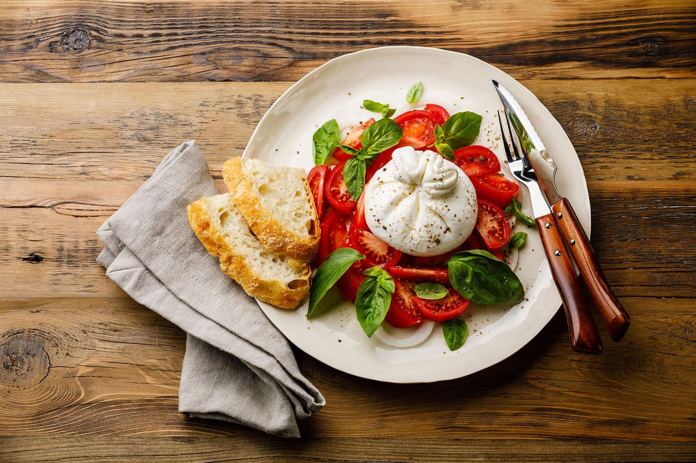
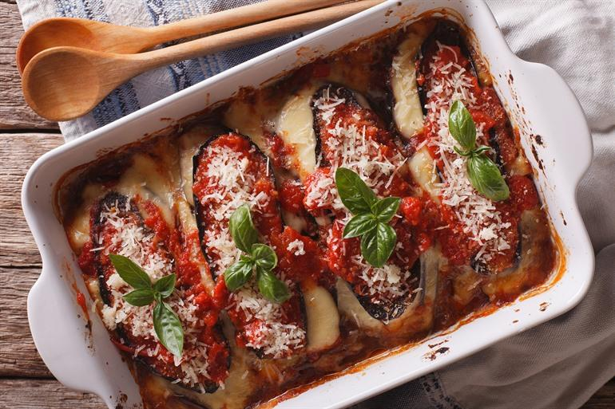
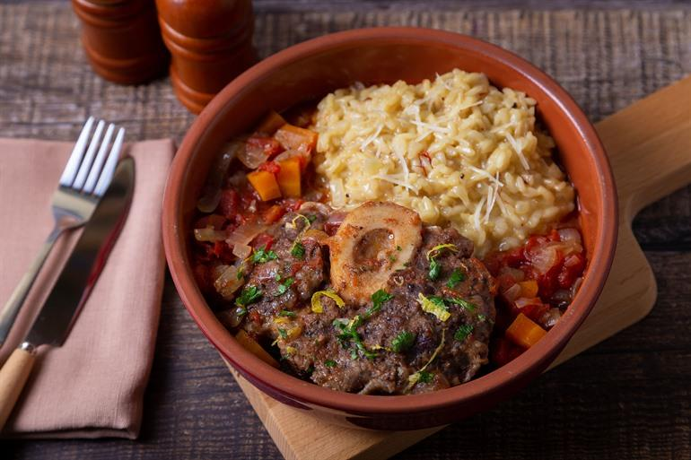
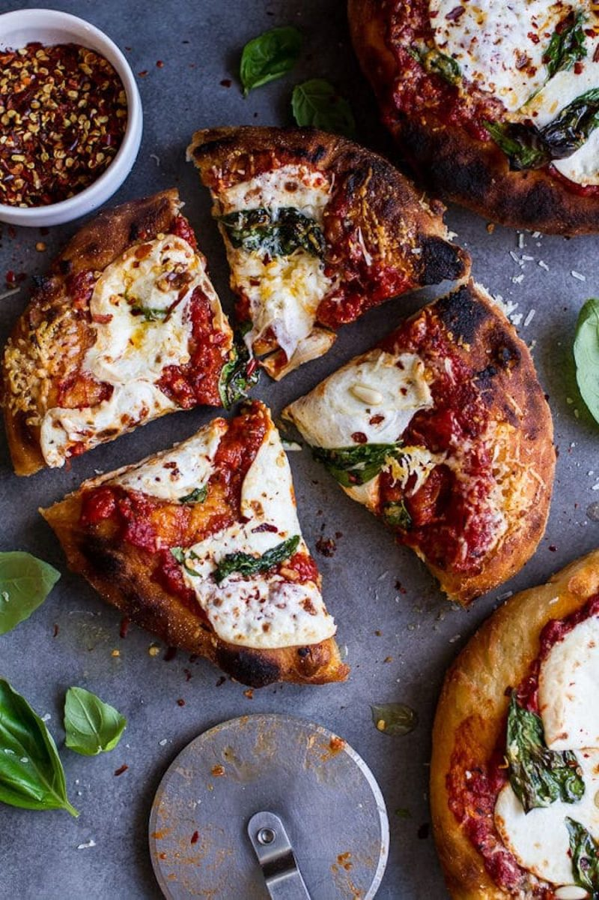
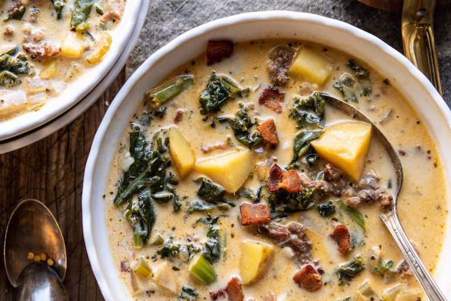
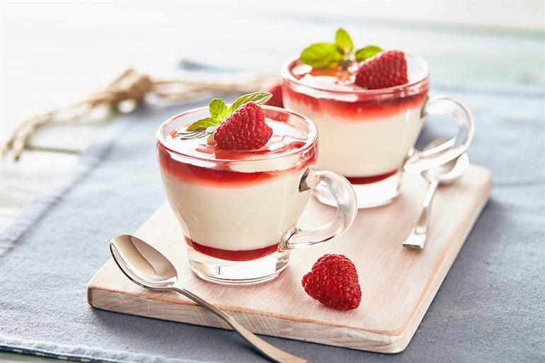

The AntiPastor
Home
Menu
Locations
Jobs
Contact
About Us
Appetizer
Dietary Info
Price
Buratta
Lactose/Dairy
7€
Cicchetti
Lactose/Dairy, Gluten, Meat
8€
Focaccia alla Genovese
Gluten, Meat
8€
Main Course
Dietary Info
Price
Melanzane alla Parmigiana
Lactose/Dairy
17€
Ossobuco Milanese
Meat
20€
Montanara Pizza
Lactose/Dairy
17€
Zuppa toscana
Meat
17€
Desert
Dietary Info
Price
Panna cotta
Lactose/Dairy
9€
Triple chocolat semifreddo
Lactose/Dairy
12€
Tiramisu
Lactose/Dairy, Alcohol, Eggs
10€
Appetizers

Burrata
Cicchetti
Focaccia
Main dishes

Melanzanealla Parmigiana

Ossobuco Milanese

Montara Pizza

Zuppa Toscana
Deserts

Panna Cotta
Semifreddo
Tiramisu